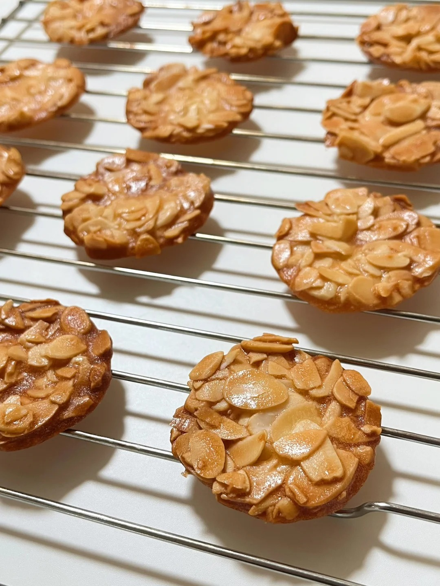
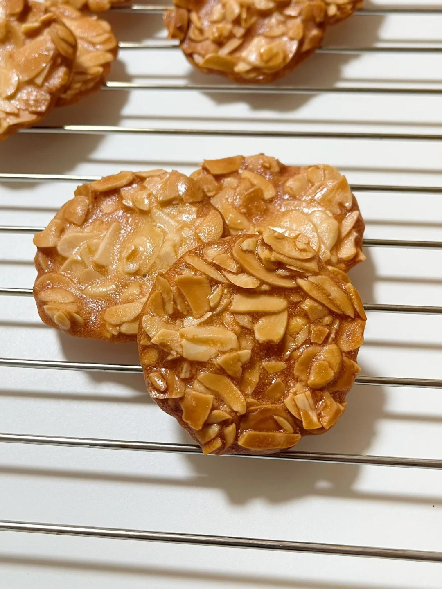
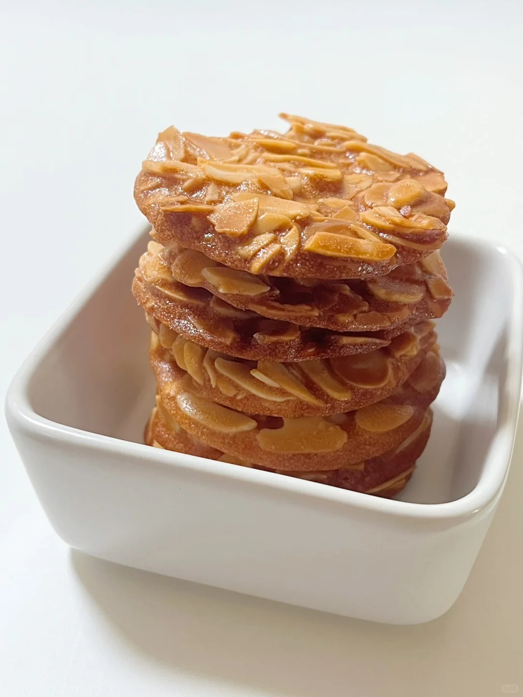

瓦片饼干



法国杏仁小饼干（Macaron）是一种以杏仁粉、糖、蛋白为主料制成的法式甜点，外脆内软，常配以夹心，口感丰富多样。其起源存在多种说法，一说源于中世纪意大利，后传入法国；另一说由16世纪玛利王后引入并称其为“少女的酥胸”。传统制作需将原料混合烘烤，成品呈现圆饼状，表层酥脆，内里湿润。0世纪90年代，Pierre Hermé在甜品店Ladurée任职期间，对传统杏仁饼进行改良，创新性地增加口味与色彩多样性，并通过包装与宣传推动其流行。据记载，Ladurée年均销售量达135吨。该甜点现已成为全球知名的法式糕点代表之一，其制作工艺延续了蛋白打发、混合粉类及分阶段烘烤等传统步骤，成品需形成标志性“裙边”。
制作方法：